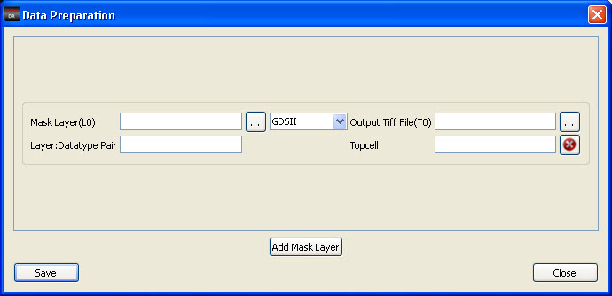
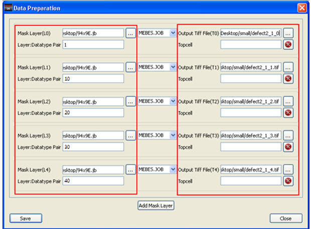
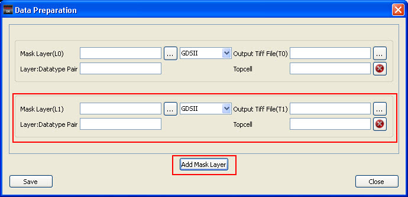

A database is
generated for input layout images using the Data Preparation dialog
box (Layout > Data Preparation).
Prerequisites
For
GDSII and OASIS files, the creation of a database is done locally
on the Windows machine where Calibre DefectReview was launched.
For MEBES.JOB and MEBES files, database creation is done remotely
on a Linux machine.
Procedure
- In the Calibre DefectReview
window, click Layout > Data Preparation.
The Data Preparation dialog box appears.
Figure 1. Data Preparation Dialog
Box
- Enter the input layout file
in the Mask Layer (L0) text entry box or browse for the file by clicking
on the … button.
Note: The type of the layout file
is automatically updated in the combo box next to the Mask Layer
(L0) field. However, you can also manually select the layout type
in the combo box.
- Once the input layout file
is specified, all layers in the job deck are populated as a separate
mask layers on the Data Preparation dialog box (see Figure 2 for an example). The TIFF file path
is populated using the following format:
defectFilePath_<inspection_number>_<mask_layer_number>.tiff
Figure 2. Data Preparation Dialog
Box With All Layers Displayed
In Figure 2, the input mask file generates five
mask layers, starting from L0 to L4, and their corresponding image
file paths.
- To enter a separate output
TIFF file name or path, enter the new file path in the Output Tiff
File text entry field browse for the file by clicking on the … button.
CAUTION: If the TIFF file already
exists, it will be overwritten.
If you select a job deck file
that has multiple layers (for example, 1, 93, 95, and 97), then each
layer is populated separately as a mask layer (as shown in Figure 2). To delete a mask layer, click Delete (the
red button with an X).
- Enter the layer and datatype
pair or level number (in the case of MEBES.JOB) in the Layer:Datatype
pair text entry field.
- Enter the top cell in the
Topcell text entry field.
- If you want to add values
for additional layout files, click Add
Mask Layer. A set of text entry fields for new mask
layer (layout file) are displayed in the dialog box (see Figure 3).
Figure 3. Adding a Mask Layer
(L1)
- Follow the same steps for
entering the values for the new layout file.
- If you are using MEBES.JOB
and MEBES format files, you must set up a remote connection with
a Linux machine to generate databases. See “Setting Up Database Creation for MEBES” for details.
- To generate the database,
click Save. If successful,
Calibre DefectReview generates a database for the input layer files.
Calibre DefectReview issues a message to indicate successful completion.
For GDSII and OASIS files,
database creation can take a long time. During this time, you can
perform any other analysis or operation as the creation is carried
out as a parallel process by Calibre DefectReview.
During database creation, the
options to view layout images in the Defect List and Defect Map
are temporarily deactivated.